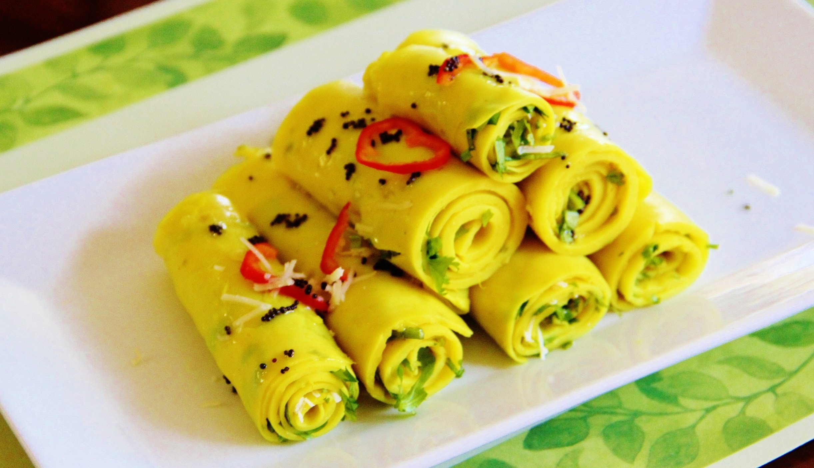

Ingredients
1.Gram Flour (Besan) - 1 cup
2.Yogurt - 1 cup
3.Water - 1 cup
4.Turmeric Powder - 1/8 tsp
5.Asafoetida - pinch
6.Ginger paste - blueberry size
7.Green Chilly paste - 1/4 tsp (optional)
8.Grated Coconut - 1 tblsp
9.Mustard Seeds - 1 tsp
10.Sesame Seeds - 1 tsp
11.Dry Red Chilly - 1
12.Oil - 2 tblsp
13.Curry Leaves - 1 spring
14.Salt - to taste
15.Cilantro - for garnishing (finely chopped)
Method
1. Mix together the gram flour, ginger paste, green chilly paste, turmeric
powder, asafoetida and required salt.
2. Add the yogurt and water gradually while stirring continuously to make a
smooth paste.
3. Transfer this to a pan and cook the mixture for about 10 minutes stirring
continuously.
4. After the besan mixture is completely cooked and it becomes like a smooth
paste, switch off the flame.
5. Using a spatula take some of the mixture and spread it onto a smooth
ungreased surface immediately. (It can be the back of a stainless steel plate,
baking tray, cookie sheet or just an aluminium foil.)
6. Let it cool for about 5 minutes.
7. In the meantime heat a pan and make a seasoning of mustard seeds,sesame
seeds, curry leaves and dry red chilly.
8. Sprinkle half of the seasoning over the mixture.
9. Cut into thin strips and roll up each strip into firm roll.
10. Arrange the rolls in a serving dish, garnish with the remaining seasoning,
finely chopped cilantro and grated coconut.